Ostia · Lido di Roma · dal 2019
Ostia Clean-Up
L'importante è agire, ora.
"Solo perché non risolve tutto, non significa che non sia parte del cambiamento."
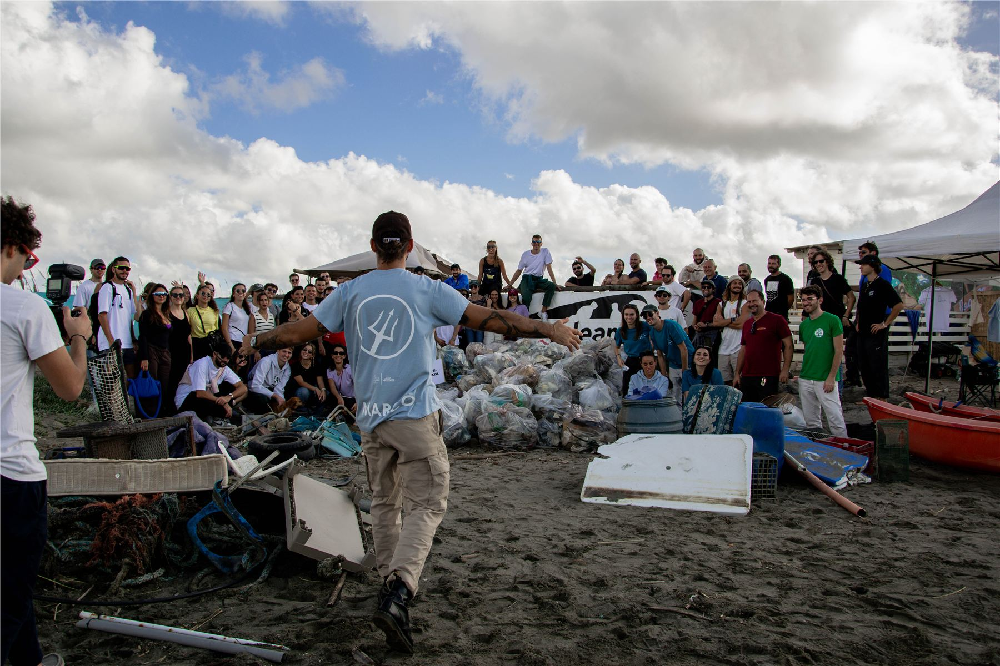
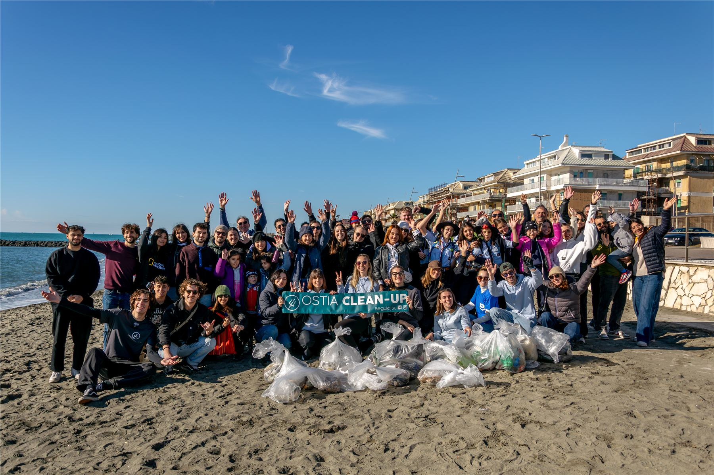
I numeri di OCU
Un impatto fatto di persone
Numeri provvisori, da aggiornare con i dati reali dell'associazione.
Chi siamo
Mare e terra.
Due elementi di valore inestimabile.
Mare e terra. Due elementi di inestimabile valore. E da questi due elementi derivano anche i nostri valori, che coincidono coi nostri obiettivi: il rispetto per l'ambiente, la sensibilizzazione di persone di ogni età, l'educazione e l'istruzione, l'ecologia, la vita. Da sempre OCU solca l'onda del green, ma è da poco che lo fa con un'importante voce alimentata da numeri e progetti.
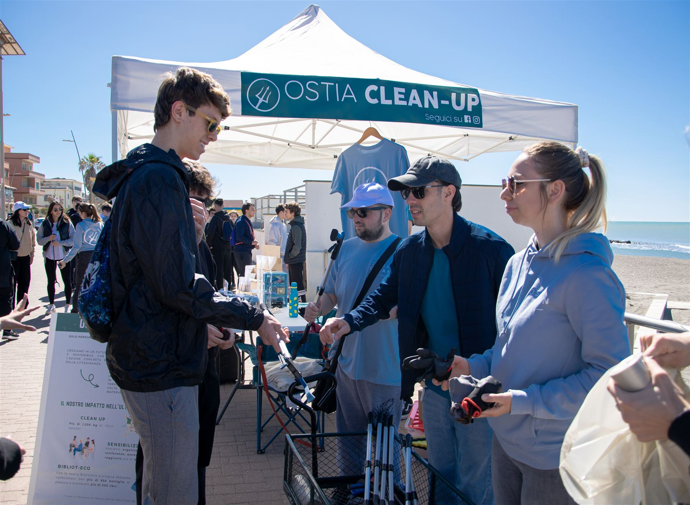
Cosa facciamo
Dall'onda all'aula
Tre modi con cui prendiamo cura del litorale e delle persone che lo vivono.
Clean up
Pulizie collettive di spiagge, pinete e quartieri, con raccolta differenziata e dati alla mano.
ScopriProgetti
Divulgazione, progettazione europea, il centro giovanile MOLO X e Bibliot-eco: la sostenibilità oltre la spiaggia.
ScopriWorkshop e PCTO
Lezioni, laboratori pratici e percorsi PCTO per scuole e persone di ogni età: imparare facendo, con le mani in pasta.
ScopriInsieme a noi
Partners
Chi cammina con noi sul litorale.
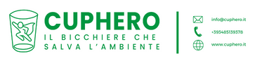
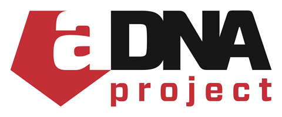
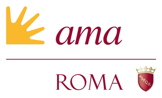
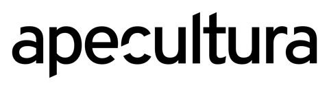
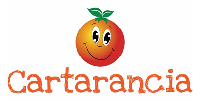
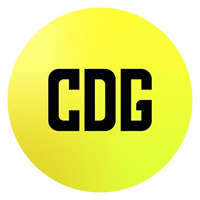
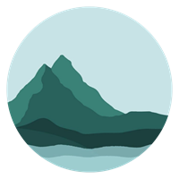
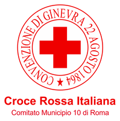
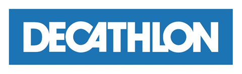
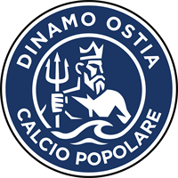
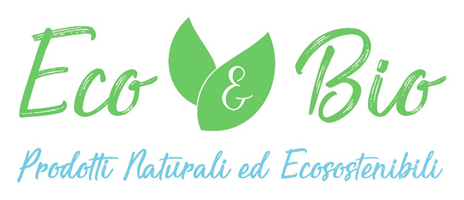
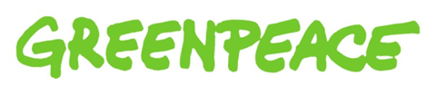
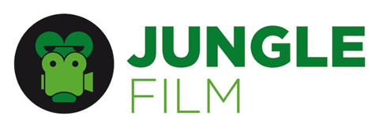
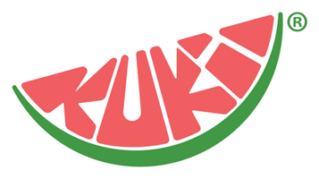
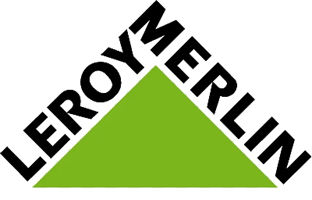
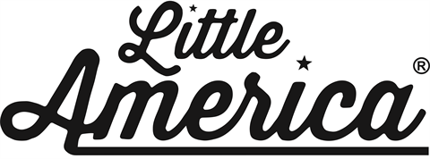
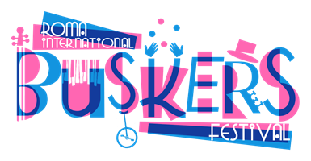
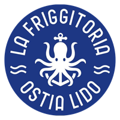
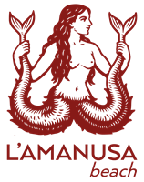
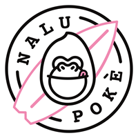
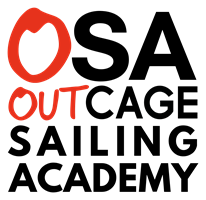
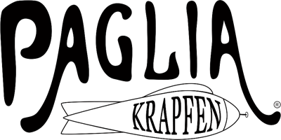
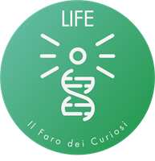
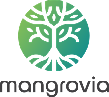
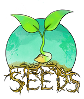
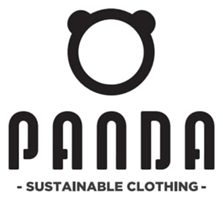
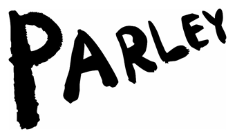
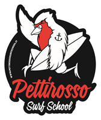
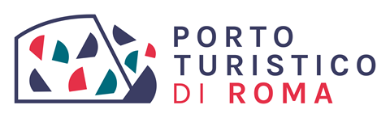
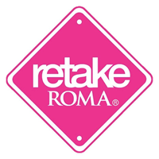
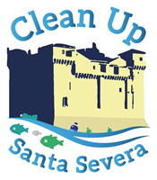
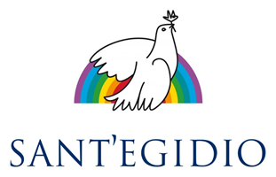
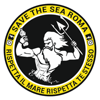
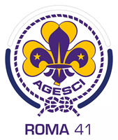
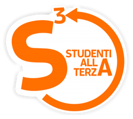
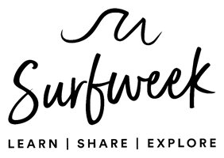
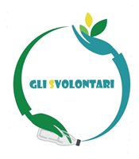
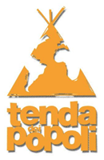
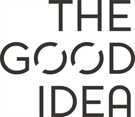
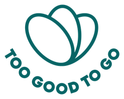
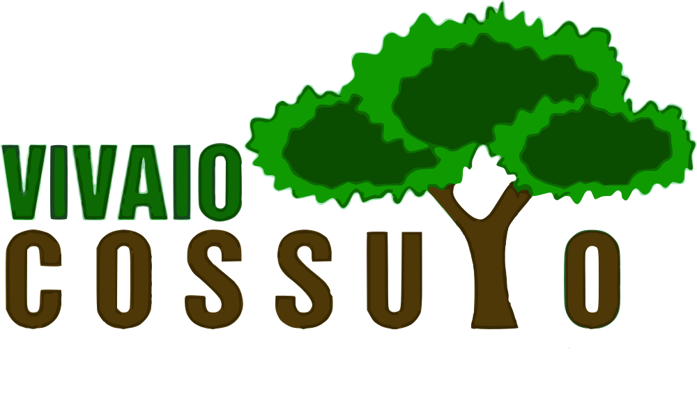
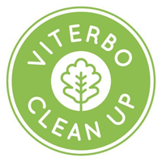
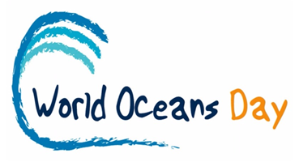
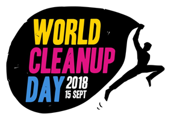
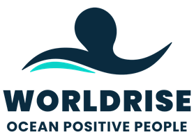
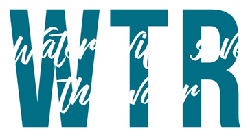
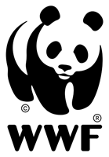
Ne hanno parlato
Press
- Pulizia dell'Oasi della duna di Ostia
- O'STIAmo a Pulì: il Clean Up Day promosso da The Good Idea e Ostiamare
- O'STIAmo a Pulì – The Good Idea and Ostiamare's Clean Up Day
- Giornata del Mare 2026 tra Ostia e Fiumicino, studenti protagonisti tra porto e circolo velico
- Ostia Clean-Up: the beach cleanup in Ostia (Rome)
- Clean up a Ostia con Europiamo
- La scheda del nostro team, con tutte le raccolte di rifiuti
- 57° Clean-Up Day ad Ostia
- 57° Clean-Up Day sul pontile di Ostia
- 5 anni di Ostia Clean-Up
- "Ostia Clean Up": i volontari raccolgono oltre 100 kg di spazzatura
- Little America x Ostia Clean-Up: l'importante è agire, ora
- Let your Beach Shine: il bilancio dell'iniziativa (pagina 3)
- Ostia Clean-Up: beach cleaning, teamworking e solidarietà
- Save the Children, a Ostia i giovani si riprendono (e puliscono) i luoghi abbandonati
- Il beach clean-up per la World Ocean Week
- Che fare sul litorale romano nel weekend dal 21 al 23 maggio
- Ostia Clean Up: 8 tonnellate di rifiuti raccolti sul territorio
- I ragazzi di Ostia Clean-Up per la Giornata Mondiale degli Oceani
- Clean-Up Day Pettirosso Surf & Ostia Clean Up
Pronto ad agire, ora?
Bastano un paio d'ore e un paio di guanti. Il prossimo clean up ti aspetta — porta anche un amico.
Voglio partecipareContatti
Scrivici
Vuoi organizzare un clean up, proporre una collaborazione o semplicemente saperne di più? Siamo a un messaggio di distanza.
- E-mailinfo@ostiacleanup.it